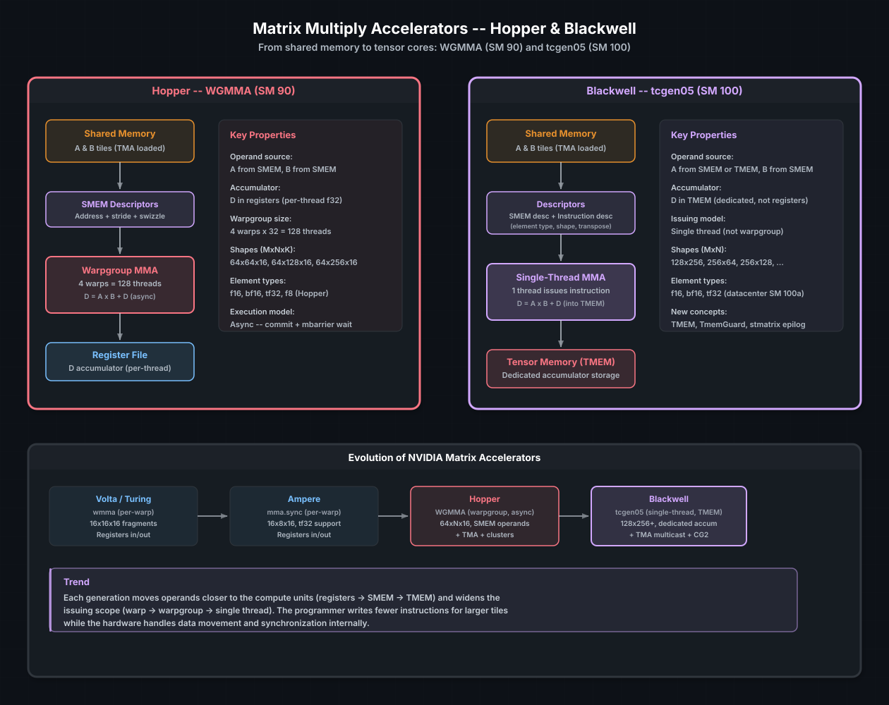

Matrix Multiply Accelerators#
Modern NVIDIA GPUs include dedicated hardware for matrix multiply-accumulate
(MMA) operations — commonly called tensor cores. These units compute
D = A × B + C on small matrix tiles at throughputs far beyond what the
standard floating-point ALUs can achieve. A Hopper H100 delivers over 1000
TFLOPS of FP16 MMA, while the same chip’s scalar FP16 throughput is roughly
200 TFLOPS. If your workload involves matrix multiplication — and most
deep learning, HPC, and signal processing workloads do — tensor cores are
where the performance lives.
cuda-oxide provides access to two generations of matrix accelerators: WGMMA on Hopper (SM 90) and tcgen05 on Blackwell (SM 100). This chapter covers both, their programming models, and how they connect to the TMA and barrier machinery from the previous chapters.
See also
CUDA Programming Guide — Warpgroup Level Matrix Operations for the hardware specification of WGMMA shapes, element types, and synchronization requirements.
The big picture#
{kind=link}

Data paths for Hopper WGMMA and Blackwell tcgen05. Both read operands from shared memory via descriptors. WGMMA accumulates into per-thread registers (warpgroup-collective). tcgen05 accumulates into dedicated Tensor Memory (TMEM), issued by a single thread.#
The evolution across generations follows a clear trend: operands move closer to the compute units, the issuing scope widens, and the programmer writes fewer instructions for larger tiles. cuda-oxide tracks this evolution with generation-specific APIs rather than a one-size-fits-all abstraction.
WGMMA — Hopper (SM 90)#
WGMMA (WarpGroup Matrix Multiply-Accumulate) is a warpgroup-collective operation: 4 warps (128 threads) cooperate to compute a matrix tile. Operands A and B are read from shared memory via SMEM descriptors, and the result accumulates into per-thread registers.
The programming model#
TMA loads tiles of A and B into shared memory (see Tensor Memory Accelerator).
SMEM descriptors encode the base address, stride, and swizzle mode for each operand.
WGMMA instructions consume the descriptors and produce the accumulator update. The instruction is async — it commits to a barrier.
Barrier wait ensures the MMA has completed before reading the accumulator.
Supported shapes#
WGMMA always has M=64 (rows), with N and K depending on the element type:
Element type |
K |
N options |
|---|---|---|
f16, bf16 |
16 |
64, 128, 256 |
tf32 |
8 |
64, 128, 256 |
Each instruction computes a 64×N×K tile. For larger K dimensions, you issue multiple WGMMA instructions in a loop, accumulating into the same register tile.
cuda-oxide API sketch#
cuda-oxide exposes WGMMA through low-level intrinsics that map directly to the hardware instructions. A typical usage pattern:
use cuda_device::wgmma::{
make_smem_desc, wgmma_fence, wgmma_commit_group, wgmma_wait_group,
wgmma_mma_m64n64k16_f32_f16,
};
// After TMA has loaded A and B tiles into shared memory...
// Build SMEM descriptors for the loaded tiles
let a_desc = unsafe { make_smem_desc(tile_a_ptr as *const u8) };
let b_desc = unsafe { make_smem_desc(tile_b_ptr as *const u8) };
// Accumulator (4 warps × 8 floats per row = 64×64 tile)
let mut acc = [[0.0f32; 8]; 4];
// Fence + issue WGMMA — all 128 threads in the warpgroup participate
unsafe {
wgmma_fence();
wgmma_mma_m64n64k16_f32_f16(&mut acc, a_desc, b_desc);
wgmma_commit_group();
wgmma_wait_group::<0>(); // wait for all outstanding groups
}
// Accumulator in `acc` is now valid — store, transform, or pass to next stage
Tip
WGMMA is often paired with a multi-stage pipeline: while the tensor cores process tile k, TMA loads tile k+1 into a second shared memory buffer. The barriers for TMA and MMA are separate, enabling full overlap of data movement and computation.
tcgen05 — Blackwell (SM 100)#
Blackwell introduces a fundamentally different matrix accelerator: tcgen05. The key innovations are:
Single-thread issue. Instead of a warpgroup-collective instruction, one thread issues the MMA. The hardware distributes work internally.
Tensor Memory (TMEM). A dedicated on-chip memory for accumulators, separate from the register file. TMEM is larger and has different access characteristics than registers.
Larger tiles. tcgen05 supports shapes up to 256×256, vs WGMMA’s 64×256.
TMEM — Tensor Memory#
TMEM is a new tier in the memory hierarchy, sitting alongside the register file but dedicated to matrix accumulation. It must be explicitly allocated and deallocated:
use cuda_device::tcgen05::{TmemGuard, TmemUninit, TmemReady};
use cuda_device::SharedArray;
static mut TMEM_ADDR: SharedArray<u32, 1> = SharedArray::UNINIT;
// Allocate TMEM (warp-collective)
let tmem: TmemGuard<TmemReady, 128> = unsafe {
TmemGuard::<TmemUninit, 128>::from_static(TMEM_ADDR.as_mut_ptr())
.alloc()
};
// ... use tmem for MMA ...
// Deallocate (warp-collective, required before kernel exit)
unsafe { tmem.dealloc(); }
TmemGuard uses typestates: TmemUninit → alloc() → TmemReady →
dealloc() → TmemDeallocated. The type system prevents using TMEM before
allocation or forgetting to deallocate — the latter would leak hardware
resources and fault.
The N_COLS const parameter determines the TMEM tile width. Common
configurations:
|
TMEM per warp |
Use case |
|---|---|---|
64 |
Smallest allocation |
Narrow tiles |
128 |
Default |
Standard GEMM tiles |
256 |
Maximum |
Wide tiles, higher throughput |
Instruction and SMEM descriptors#
tcgen05 uses two descriptors per MMA instruction:
Instruction descriptor — encodes the MMA configuration:
use cuda_device::tcgen05::{
Tcgen05InstructionDescriptor,
Tcgen05ElementType,
Tcgen05MmaShape,
};
let idesc = Tcgen05InstructionDescriptor::builder()
.shape(Tcgen05MmaShape::M128_N128)
.a_type(Tcgen05ElementType::F16)
.b_type(Tcgen05ElementType::F16)
.build();
SMEM descriptor — points to the operand tile in shared memory:
use cuda_device::tcgen05::{Tcgen05SmemDescriptor, Tcgen05SwizzleMode};
let a_desc = Tcgen05SmemDescriptor::for_k_major(
smem_a_addr,
m, k,
2, // bytes per element (f16)
Tcgen05SwizzleMode::Swizzle128B,
);
Issuing MMA#
One thread issues the MMA instruction, then all threads wait on a barrier:
use cuda_device::tcgen05::{tcgen05_mma_f16, tcgen05_commit};
if thread::threadIdx_x() == 0 {
unsafe {
tcgen05_mma_f16(
tmem.raw_address(),
a_desc.raw(),
b_desc.raw(),
idesc.raw(),
true, // enable accumulation into D
);
tcgen05_commit(mma_barrier_ptr);
}
}
// All threads wait for MMA completion
mma_barrier.wait(token);
Epilog — reading results from TMEM#
After the MMA loop, the accumulator lives in TMEM. To move it to shared
memory (for a subsequent TMA store to global), you load from TMEM into
registers and then use stmatrix to write to shared memory:
use cuda_device::tcgen05::{
cvt_f32x2_bf16x2,
tcgen05_ld_16x256b_pure,
tcgen05_load_wait,
stmatrix_m8n8_x2,
TmemF32x4,
};
unsafe {
// Load a 16×256-bit slice from TMEM into registers
let regs: TmemF32x4 = tcgen05_ld_16x256b_pure(tmem.raw_address());
tcgen05_load_wait();
// Convert four f32 accumulators into two registers of packed bf16 values.
let packed0 = cvt_f32x2_bf16x2(regs[0], regs[1]);
let packed1 = cvt_f32x2_bf16x2(regs[2], regs[3]);
// Store two 8×8 matrices from registers (warp-collective).
stmatrix_m8n8_x2(smem_ptr, packed0, packed1);
}
stmatrix is a warp-collective operation — all 32 threads participate,
each contributing its register slice to form the shared memory tile.
CTA-group-2 (CG2)#
Blackwell also supports CG2 mode, where two CTAs (from a cluster) issue
MMA instructions that are coordinated as a pair. This doubles the effective
tile width and requires the _cg2 API variants:
use cuda_device::tcgen05::{tcgen05_alloc_cg2, tcgen05_mma_f16_cg2};
CG2 and CG1 (standard) must not be mixed in the same kernel.
Tip
tcgen05 is only available on Blackwell datacenter GPUs (SM 100a).
Consumer Blackwell (SM 120) uses the older mma.sync instruction set.
Check the target architecture before reaching for the tcgen05 API.
Choosing the right accelerator#
Feature |
WGMMA (Hopper) |
tcgen05 (Blackwell DC) |
mma.sync (Ampere/consumer) |
|---|---|---|---|
Issue model |
Warpgroup (128 threads) |
Single thread |
Warp (32 threads) |
Accumulator |
Registers |
TMEM (dedicated) |
Registers |
Max tile (M×N) |
64×256 |
256×256 |
16×8 |
Async execution |
Yes (commit+barrier) |
Yes (commit+barrier) |
Synchronous |
TMA integration |
Native |
Native + multicast CG2 |
Manual loads |
Cluster support |
Yes |
Yes + CG2 |
No |
Minimum SM |
90 (Hopper) |
100a (Blackwell DC) |
80 (Ampere) |
For most users, the choice is determined by the target GPU. If you are writing a library that targets multiple architectures, you will need compile-time feature gates or runtime architecture detection to select the right code path.
The GEMM progression#
These accelerators do not exist in isolation. A high-performance GEMM kernel combines every technique from this chapter and the preceding ones:
TMA loads tiles from global to shared memory (no thread loads)
Barriers track TMA completion per stage
MMA instructions (WGMMA or tcgen05) consume tiles from shared memory
Multi-stage pipeline overlaps load of tile k+1 with MMA on tile k
Warp specialization dedicates some warps to loading, others to MMA
Epilog (tcgen05) loads from TMEM, converts precision, stores via TMA
This is the kernel structure that cuBLAS and CUTLASS use internally. With
cuda-oxide, you can build this same structure in Rust — using SharedArray
for tiles, ManagedBarrier for synchronization, and the MMA APIs for
compute.
The gemm_sol
example
is the worked-out reference. Its 4-stage cta_group::2 pipeline reaches
868 TFLOPS at 4096³ — 57.8 % of cublasLtMatmul SoL — on B200 (148 SMs).
Absolute throughput scales with SM count on smaller Blackwell datacenter
SKUs (e.g., on an 80-SM variant the same kernel runs at ~204 TFLOPS / ~46 %
SoL — see the per-phase tables in the example’s README for both
configurations). The example measures the cublasLt baseline live via
bench/cublaslt_bench, so its “% of SoL” column is always relative to the
host GPU’s cublasLt peak rather than a fixed B200 number.
See also
Shared Memory and Synchronization — tile management for MMA operands
Tensor Memory Accelerator — feeding tiles to the tensor cores
Cluster Programming — CG2 mode and multicast for multi-CTA MMA